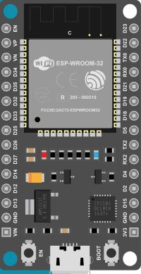
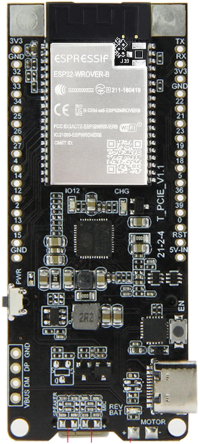
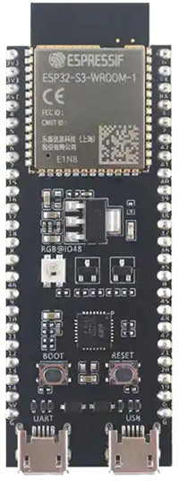
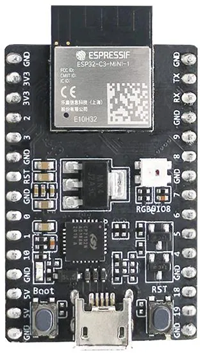

🧰 Configurando o ESP32 no Thonny IDE - Windows 11

Você comprou um ESP32 cheio de esperança. Aquele microcontrolador promissor que permite programar em Python – a linguagem mais amigável do mercado. Mas quando conecta à sua máquina Windows 11, encontra um muro: drivers não reconhecidos, portas COM desaparecidas, mensagens de erro incompreensíveis. Pior ainda, há tutoriais contraditórios na internet, alguns desatualizados, outros focados em IDEs diferentes.
A sensação é frustrante. Você tem a ferramenta nas mãos, mas não consegue fazê-la funcionar.
Aqui está a boa notícia: esse problema tem solução simples e direta. E é exatamente isso que vamos resolver juntos neste guia.
🤖 Por Que Escolher Thonny IDE?
Antes de começar a configuração, vamos entender por que Thonny é a melhor escolha para iniciantes que desejam trabalhar com ESP32 e MicroPython.
O Thonny IDE foi criado especificamente para simplificar o desenvolvimento em MicroPython. Diferente de ferramentas como Arduino IDE ou VS Code (que exigem extensões e configurações complexas), o Thonny oferece:
- Interface intuitiva e limpa – sem poluição visual
- Instalação integrada de firmware – você não precisa usar linhas de comando
- REPL interativo – execute comandos Python em tempo real no ESP32
- Gerenciador de arquivos visual – transfira código para a placa com cliques
- Suporte automático a drivers – detecção inteligente de portas COM
- Compatibilidade multiplataforma – funciona em Windows, macOS e Linux
Em outras palavras: Thonny elimina 80% das dores de cabeça que iniciantes enfrentam.
O Que Você Vai Aprender 🎯
Neste artigo, vamos cobrir:
- Verificação de hardware – garantindo que seu ESP32 está em condições de uso
- Instalação de drivers USB – resolvendo problemas de conectividade
- Download e instalação do Thonny IDE – preparando o ambiente
- Configuração do interpretador MicroPython – o passo mais importante
- Upload do firmware MicroPython – transformando o ESP32 em uma máquina Python
- Seu primeiro programa – fazendo um LED piscar (o "Hello World" embarcado)
- Arquivos boot.py e main.py – como automatizar programas no ESP32
1️⃣ Conhecendo Seu Hardware¶
Antes de qualquer coisa, você precisa saber exatamente qual ESP32 você tem e qual chip USB está na placa.
🔖 Identificando Sua Placa¶
Existem várias versões do ESP32 no mercado. As mais comuns são:
| Modelo | Características | Comum em |
|---|---|---|
| ESP32-DevKit V1 (DOIT) | 36 pinos, antena integrada, mais popular | AliExpress, eBay |
| ESP32-Wrover | Inclui RAM extra (4MB), tela LCD | Kits educacionais |
| ESP32-S3 | Mais moderno, 2 núcleos, melhor performance | Versões recentes |
| ESP32-C3 | Mais compacto, RISC-V | IoT minimalistas |
Como identificar sua placa? Procure na documentação de compra ou observe o silkscreen (texto impresso) na placa. A maioria dos projetos deste guia funciona com qualquer variante.
| Modelo | Imagem |
|---|---|
| ESP32-DevKit V1 (DOIT) |  |
| ESP32-Wrover |  |
| ESP32-S3 |  |
| ESP32-C3 |  |
{kind=link}
{kind=link}
{kind=link}
{kind=link}
🔖 Verificando o Chip USB-Serial¶
Este é o passo mais importante para evitar problemas de drivers. O chip USB-Serial é aquele pequeno componente próximo à porta Micro USB que permite comunicação com seu computador.
Pegue um espelho ou uma lente de aumento e procure por um destes chips na placa:
CP2102 (mais comum em placas modernas)
- Fabricante: Silicon Labs
- Você verá escrito "CP2102" ou "CP2104"
- Pinagem próxima à porta USB
CH340 (comum em placas chinesas mais antigas)
- Fabricante: WCH
- Você verá escrito "CH340" ou "CH340G"
- Geralmente preto ou verde
{kind=link}
AVISO IMPORTANTE
Nem todos os ESP32 vêm com driver pré-instalado no Windows 11. A maioria não vem. Se você conectar a placa e nada acontecer no Gerenciador de Dispositivos, esse é o seu problema. Continue lendo que resolvemos isso.
2️⃣ Instalando Drivers USB (O Vilão da História)¶
Se você conectar o ESP32 ao Windows 11 e nada aparecer no Gerenciador de Dispositivos, ou aparecer como "Dispositivo Desconhecido", você está aqui no lugar certo.
🔖Abrindo o Gerenciador de Dispositivos¶
- Clique no ícone Windows (canto inferior esquerdo) ou pressione a tecla Windows
- Digite:
Gerenciador de Dispositivose pressione Enter - Procure por "Portas (COM e LPT)" ou "Other Devices" (Outros Dispositivos)
Se você ver algo como:
- ❌ "USB Serial Device (COMx)"
- ❌ "Dispositivo USB Desconhecido"
- ❌ Um ponto de exclamação amarelo
{kind=link}
...então você precisa instalar drivers.
🔖 Se Você Tem CP2102 (Silicon Labs)¶
Este é o chip mais comum em placas modernas.
Passo 1: Download do Driver
Acesse o site oficial da Silicon Labs clicando aqui
Procure pela seção "Download VCP Drivers" e selecione a versão Windows (geralmente é a versão x64 para Windows 11).
Passo 2: Instalação
- Após baixar, localize o arquivo
.zipbaixado - Clique com botão direito → Extrair Tudo
- Abra a pasta extraída
- Procure por
CP210xVCPInstaller_x64.exe - Clique com botão direito → Executar como Administrador
- Clique em Seguinte (Next) em todas as telas
- Clique em Instalar (Install) quando solicitado
DICA PRO
Depois de instalar o driver, NÃO desconecte o ESP32 ainda. Deixe conectado e aguarde 10 segundos. O Windows vai "reconhecer" o dispositivo automaticamente. Você verá uma notificação discreta no canto inferior direito.
Passo 3: Verificação
- Abra o Gerenciador de Dispositivos novamente
- Procure por "Portas (COM e LPT)"
- Você deve ver algo como: "Silicon Labs CP210x USB to UART Bridge (COM6)"
- Anote o número de porta (COM6 no exemplo) – você vai precisar disso em breve
{kind=link}
🔖 Se Você Tem CH340 (Placas Antigas)¶
Se sua placa usa o chip CH340, o processo é ligeiramente diferente.
Passo 1: Download do Driver
Acesse o sitw oficial clicando aqui (site chinês, mas funciona)
Ou baixe de um repositório confiável clicando aqui
Procure pela versão Windows (geralmente há um arquivo .exe direto).
Passo 2: Instalação
- Execute o instalador como Administrador (botão direito → Executar como Administrador)
- Siga os passos normais de instalação
- Reinicie seu computador (importante para CH340!)
Passo 3: Verificação
Após reiniciar, abra o Gerenciador de Dispositivos e procure por "USB-SERIAL CH340". Anote a porta COM.
DICA
Ainda não consegue ver a porta COM? Tente trocar o cabo USB. Você ficaria surpreso com quantos "problemas de driver" são na verdade cabos USB defeituosos que não transmitem dados.
3️⃣ Instalando o Thonny IDE¶
Agora que seus drivers estão funcionando, é hora de instalar a IDE.
🔖 Download¶
Acesse o site oficial: https://thonny.org/
Você verá um grande botão "Download" na página. Como está usando Windows 11, clique nele e você receberá o instalador .exe automático.
🔖 Instalação Passo a Passo¶
- Localize o arquivo
thonny-X.X.X.exeque você baixou (o número de versão pode variar) - Clique duplo para iniciar a instalação
- Uma janela aparecerá perguntando sobre instalação. Clique em "Next" (Seguinte)
- Selecione "Install for all users" (recomendado)
- Escolha um local de instalação (padrão está bom)
- Clique em "Install"
- Aguarde a instalação completar
- Desmarque "Run Thonny" na última tela (ainda não vamos abri-lo)
- Clique em "Finish" (Concluído)
🔖 Primeiro Execução¶
Agora vamos abrir o Thonny COM o ESP32 já conectado ao computador (isso é importante).
- Clique no ícone Thonny no desktop ou menu iniciar
- Ele abrirá com uma interface bem limpa
- Na primeira vez, pode pedir idioma – escolha "Português (Brasil)" se desejar
- Na tela de boas-vindas, clique em "Let's begin!" (Vamos começar!)
4️⃣ Configurando o Interpretador MicroPython¶
Este é o passo mais importante do guia. Aqui você vai transformar seu ESP32 vazio em uma máquina Python funcional.
Quando você compra um ESP32 novo, ele NÃO vem com MicroPython instalado. Ele vem com um firmware vazio ou com Arduino bootloader, dependendo do modelo. Para programar em Python, você precisa:
- Instalar o firmware MicroPython – transformar o chip em um intérprete Python
- Configurar a IDE para reconhecer esse novo interpretador
- Fazer upload do código para a placa
Se você pular ou errar qualquer um desses passos, verá erros como:
- ❌ "ImportError: no module named 'machine'"
- ❌ "No suitable firmware found"
- ❌ "Unable to connect to REPL"
Todos esses erros acontecem porque MicroPython não foi instalado corretamente.
Em linhas gerais o que nos vamos fazer nos próximos passos:
- Nosso ESP32 agora
- Firmware vazio ou Arduino bootloader
- Sem interpretador Python
- Sem módulo 'machine' para controlar pinos
- Sem capacidade de executar código Python
- Instalação MicroPython
- Após a instalação
- ✅ MicroPython firmware instalado (≈600KB)
- ✅ Interpretador Python completo funcionando
- ✅ Módulo 'machine' disponível (GPIOs, PWM, etc)
- ✅ REPL interativo (Python em tempo real)
- ✅ Capaz de executar .py files
Etapa 1: Conectando Seu ESP32 e Abrindo Thonny
Antes de fazer qualquer coisa, seu ESP32 deve estar fisicamente conectado ao computador via USB.
- Pegue seu ESP32 e o cabo USB (Micro-USB ou USB-C, dependendo do modelo)
- Conecte ao computador
- Procure pelo LED de energia (vermelho) na placa acender – isso confirma conexão elétrica
Agora, abra o Thonny IDE:
- Clique no ícone Thonny no desktop ou procure no menu Iniciar
- Aguarde a janela abrir completamente (primeiro carregamento é mais lento)
- Você verá uma interface limpa com Editor no topo e Shell (REPL) no fundo
Primeiras pista de Sucesso
Na parte inferior direita da janela do Thonny, você verá algo como:
- "Python 3.11 local" (significa que está usando Python do seu PC)
- "COM5" ou similar (a porta do seu ESP32)
Isso significa que o Thonny detectou sua porta COM automaticamente. Excelente!
Etapa 2: Acessando as Configurações do Interpretador
Agora você precisa dizer ao Thonny: "Quero usar MicroPython no ESP32, não Python normal".
Clique em: Run → Configure interpreter (ou Tools → Options em versões antigas)
Uma janela abrirá com várias abas. Procure pela aba "Interpreter" (Interpretador).
Você verá um dropdown menu que provavelmente mostra: - "Python 3.11 local" ou similar
{kind=link}
AVISO IMPORTANTE
NÃO toque em nada ainda! Se você clicar em "Install or update MicroPython" agora, e não tiver selecionado o interpretador correto, pode corromper a instalação. Siga o próximo passo primeiro.
Etapa 3: Selecionando MicroPython (ESP32)
Este é o primeiro passo que realmente importa.
- Clique no dropdown que diz "Python 3.X local"
- Procure pelas opções disponíveis
- Você deve ver: "MicroPython (ESP32)"
- Selecione esta opção
Imediatamente após selecionar, você deve ver:
| Campo | Valor Esperado |
|---|---|
| Interpreter | MicroPython (ESP32) |
| Port | COM5 (ou outro número) |
| Board Type | (pode estar vazio ou com um valor) |
{kind=link}
A porta não aparece?
Se o campo Port estiver vazio ou mostrar "Unknown Port":
- Desconecte o ESP32 do USB
- Espere 3 segundos
- Clique no dropdown de Port (deve estar vazio agora)
- Reconecte o ESP32
- Clique no dropdown de Port novamente
- Agora deve aparecer a porta (COM5, COM10, etc)
Se AINDA não aparecer, verifique se os drivers foram instalados corretamente (volte ao PASSO 2).
Etapa 4: O Botão Mágico - Instalar MicroPython Firmware
Agora vem a parte que transforma seu ESP32.
Na mesma janela de configuração, procure por um botão chamado:
- "Install or update MicroPython (esptool)" ou
- "Instalar o firmware MicroPython (esptool)" (se em português)
Clique neste botão.
Uma nova janela abrirá com várias opções. Selecione:
- Target Port: COM5 (ou seu número)
- Interpreter family: ESP32
- Variant: ESP32 Generic
- Firmware: (lista de versões)
- Erase flash: ☐ (checkbox)
{kind=link}
1. Target Port (Porta Alvo)
- Deve estar pré-selecionada como a porta onde seu ESP32 está (COM5)
- Se não estiver, clique no dropdown e selecione
2. Interpreter family (Família do Interpretador)
- Deve estar como "ESP32"
- Não mude isso
3. Variant (Variante)
- Procure por "ESP32 Generic" ou apenas "Generic"
- Se tiver dúvida, escolha "Generic" – funciona com 99% dos ESP32
- Se souber que tem um ESP32-S3 ou ESP32-C3, selecione a opção específica
4. Firmware (Firmware)
- Aparecerá uma lista com versões como "1.22.0", "1.23.0", "1.24.0"
- Sempre escolha a versão mais recente (lista está em ordem do mais antigo para o mais novo)
- Ou deixe em branco para que o Thonny baixe a recomendada automaticamente
5. Erase flash (Apagar Flash) - MUITO IMPORTANTE!
- Procure por um checkbox que diz "Erase flash before installing"
- Marque esta opção ✅
- Isso garante uma instalação limpa, sem conflitos com código antigo
- Se não marcar, pode ter problemas depois
DICA PROFISSIONAL
Se você já tiver tentado programar o ESP32 com Arduino IDE ou qualquer outra ferramenta antes, SEMPRE marque "Erase flash". Isto apaga completamente a memória e evita conflitos.
Etapa 5: Executando a Instalação
Quando tudo estiver configurado como acima, clique em [Install] (Instalar).
Uma barra de progresso aparecerá na janela. Você verá mensagens como:
Connecting to COM5...
Identifying the chip...
Downloading firmware (this may take a moment)...
Erasing flash memory...
Writing firmware [████████░░░░░░░░░░] 45%
Writing firmware [██████████████░░░░░] 80%
Verifying...
Done!
Todo o processo leva entre 30 segundos a 3 minutos.
Durante a Instalação :
- ✅ Deixe o ESP32 conectado – não desconecte o USB
- ✅ Deixe o Thonny aberto – não feche a janela
- ✅ Fique perto do computador – em alguns casos, o ESP32 solicita ação manual
- ❌ Não clique em botões – deixe o processo rodar sozinho
Alguns modelos de ESP32 (especialmente ESP32-S3 e versões novas) podem pedir para você pressionar o botão BOOT durante a instalação.
Se uma mensagem aparecer dizendo:
"Press and hold the BOOT button, then click OK"
Ou similar em português:
"Pressione e segure o botão BOOT, depois clique OK"
Faça exatamente isso:
- Localize o botão pequeno BOOT na sua placa ESP32
- Segure-o pressionado (não precisa muita força, é um botão pequeno)
- Clique em OK/Continuar no Thonny
- Mantenha o botão pressionado por mais 2-3 segundos
- Solte o botão
Depois disso, o processo continua automaticamente.
Etapa 6: Verificando Se Funcionou
Quando a instalação terminar, você verá uma das duas mensagens:
✅ Sucesso
{kind=link}
Parabéns! Seu ESP32 agora é uma máquina Python.
Clique em [Close] (Fechar) para voltar à janela anterior.
❌ Erro
Se aparecer uma mensagem de erro como: - "Installation failed" - "Could not connect to device" - "Timeout while waiting for response"
Não se preocupe, vá para a seção "Troubleshooting" mais abaixo.
Etapa 7: Confirmando Que MicroPython Está Instalado
Depois de fechar a janela de instalação, você voltará à tela de Configuração do Interpretador.
Agora, você deve ver mudanças importantes:
| Antes | Depois |
|---|---|
| "Python 3.11 local" | "MicroPython (ESP32)" |
| Nenhuma versão visível | Versão MicroPython (ex: 1.24.0) |
Clique em OK ou Close para finalizar a configuração.
Etapa 8: Seu Primeiro Contato com o REPL
Agora vem a parte emocionante. O REPL (Read-Eval-Print Loop) é um console Python em tempo real que roda no ESP32.
Você deve ver no painel inferior do Thonny (chamado de Shell) algo como:
MicroPython v1.24.0 on 2024-10-25; Generic ESP32 module with ESP32
Type "help()" for more information.
>>> |
Aquele >>> com o cursor piscando é o REPL do MicroPython rodando no ESP32 em tempo real.
Seu Primeiro Comando
Clique no painel Shell (onde vê o >>>) e digite:
Depois pressione Enter.
Se você vir:
🎉 PERFEITO! Seu ESP32 está funcionando com MicroPython.
Etapa 9: Verificando Se o módulo 'machine' Está Disponível
O módulo machine é essencial para controlar os pinos do ESP32. Vamos verificar se foi instalado corretamente.
No REPL (aquele >>>), digite:
Pressione Enter. Se nada acontecer (não houve erro), está perfeito.
Agora teste se consegue acessar um pino:
Se o LED verde/azul do ESP32 acender, significa que:
- ✅ MicroPython foi instalado corretamente
- ✅ O módulo machine está funcionando
- ✅ Você consegue controlar os pinos
- ✅ Está pronto para o Passo 5!
Se o LED não acender, não se preocupe – pode ser que seu ESP32 tenha o LED em outro pino, não é um problema.
5️⃣ Seu Primeiro Programa – LED Piscando¶
Agora vamos fazer algo de verdade. Você vai criar um programa que faz um LED piscar.
🔖 Preparando o Hardware¶
Se você tiver um ESP32 com LED integrado, ótimo! Ele está geralmente no pino GPIO 2. Você não precisa de mais nada.
Se quiser adicionar um LED externo:
- Pegue um LED (qualquer cor)
- Pegue um resistor de 220Ω (opcional, mas recomendado para proteger o LED)
- Conecte o lado longo (anodo/+) do LED ao Pino GPIO 2 do ESP32
- Conecte o lado curto (catodo/-) do LED ao GND (terra) do ESP32
🔌 CONEXÃO TÍPICA
🔖 Escrevendo o Código¶
No painel central do Thonny, limpe tudo que existe e digite:
import machine
import time
# Define o pino 2 como saída (onde o LED está conectado)
led = machine.Pin(2, machine.Pin.OUT)
# Loop infinito
while True:
# Acende o LED
led.on()
print("LED está LIGADO")
time.sleep(1) # Espera 1 segundo
# Apaga o LED
led.off()
print("LED está DESLIGADO")
time.sleep(1) # Espera mais 1 segundo
🔖 Explicando o Código¶
| Linha | O Que Faz |
|---|---|
import machine |
Importa a biblioteca que controla os pinos do ESP32 |
import time |
Importa funções para controlar tempo |
led = machine.Pin(2, machine.Pin.OUT) |
Define o pino 2 como SAÍDA (para controlar o LED) |
while True: |
Loop infinito (repete para sempre) |
led.on() |
Acende o LED |
time.sleep(1) |
Aguarda 1 segundo |
led.off() |
Apaga o LED |
🔖 Executando¶
- Clique no botão [▶] Play (verde) na barra superior
- Você verá o LED piscando! 🎉
- No painel inferior (shell), você verá:
🔖 Parando o Programa¶
Para parar, clique no botão [⏹] Stop (vermelho). Isso reseta o ESP32 e interrompe a execução.
Que tal realizar alguns teste ?
Tente mudar os números em time.sleep() para fazer o LED piscar mais rápido ou mais lentamente. Por exemplo:
time.sleep(0.5)= pisca 2 vezes por segundotime.sleep(2)= pisca uma vez a cada 2 segundos
6️⃣ Salvando Programas no ESP32¶
Até agora, você executou o programa de forma interativa. Mas e se quiser que o ESP32 execute o programa automaticamente quando for ligado, sem estar conectado ao computador?
Para isso, você precisa salvar o programa no próprio ESP32 em um arquivo chamado main.py.
🔖 Entendendo boot.py e main.py¶
O MicroPython procura por dois arquivos especiais quando o ESP32 inicia:
- boot.py – Executado primeiro (para configurações iniciais)
- main.py – Executado após boot.py (o programa principal)
Na maioria dos casos, você só vai se preocupar com main.py.
🔖 Salvando o Programa¶
- Com seu código de pisca LED já escrito, clique em File → Save (Arquivo → Salvar)
- Uma janela abrirá perguntando onde salvar
- IMPORTANTE: No topo da janela, você verá dois locais:
- "Home" ou "Desktop" = seu computador
-
"MicroPython device" ou "ESP32" = a placa
-
Selecione "MicroPython device" (seu ESP32)
- No campo "Filename", digite:
main.py - Clique em "OK" ou "Save"
✅ FEITO!
Seu programa agora está permanentemente salvo no ESP32. A próxima vez que você ligar a placa, ele executará automaticamente.
🔖 Verificando o Arquivo¶
No painel esquerdo do Thonny, você verá uma seção "MicroPython device" com seus arquivos. Procure por main.py. Se estiver lá, você salvou com sucesso.
Para remover ou editar o arquivo, clique com botão direito nele.
7️⃣ Resolvendo Problemas Comuns¶
Mesmo que você tenha seguido tudo corretamente, podem surgir pequenos problemas. Aqui estão os mais comuns e as soluções.
Problema 1: Porta COM não aparece no Thonny 🐞
Sintoma: O dropdown de "Port" no Thonny está vazio.
Solução:
- Desconecte o ESP32
- Reinicie o Thonny completamente
- Reconecte o ESP32
- Abra novamente a tela de configuração (Run → Configure interpreter)
- Clique no dropdown de Porta
Se ainda não aparecer, verifique se os drivers foram instalados (volte ao PASSO 2).
Problema 2: "Connection refused ou "Unable to connect 🐞
Sintoma: Thonny não consegue se conectar ao ESP32.
Solução:
- Verifique se o ESP32 está realmente conectado (procure pelo LED de energia aceso)
- Tente outro cabo USB (muitos "problemas" são cabos defeituosos!)
- Desconecte e reconecte o ESP32
- Se tiver Arduino IDE aberto, feche-o – duas aplicações não podem acessar a mesma porta COM simultaneamente
⚠️ AVISO
Se você tiver Arduino IDE, VS Code ou qualquer outra ferramenta usando a mesma porta COM, o Thonny não conseguirá conectar. Feche as outras ferramentas.
Problema 3: Installation failed ao instalar MicroPython 🐞
Sintoma: Quando você tenta instalar o firmware, recebe mensagem de erro.
Solução:
- Desconecte o ESP32
- Aguarde 5 segundos
- Reconecte
- Tente novamente em Run → Configure interpreter → Install or update MicroPython
- Desta vez, verifique se marcou "Erase flash before installing"
Se continuar falhando:
- Desligue seu PC
- Aguarde 10 segundos
- Ligue novamente
- Tente a instalação
Essa sequência resolve 99% dos casos de instalação falha.
Problema 4: LED não pisca mesmo após executar o programa 🐞
Sintoma: Você clicou Play, viu as mensagens no shell, mas o LED não se move.
Verificação:
- Você tem um LED conectado ao pino 2? (Se for usar o LED integrado, continue)
- Você conectou o LED corretamente? (lado longo para GPIO 2, lado curto para GND)
- Abra o REPL (shell inferior) e digite:
O LED deve acender. Se não acender, o problema é no hardware, não no código.
8️⃣ Próximos Passos – Indo Além do LED¶
Agora que você dominou a configuração básica, aqui estão ideias para expandir seu conhecimento:
Projeto 1: LED com Botão 🏗️
Leia um botão conectado ao pino 4 e acenda/apague o LED no pino 2.
Projeto 2: WiFi Básico 🏗️
Conecte o ESP32 a uma rede WiFi.
Projeto 3: Sensor de Temperatura 🏗️
Leia o sensor de temperatura embutido do ESP32.
9️⃣ Conclusão: Sua Jornada Começa Agora¶
A configuração do ESP32 no Thonny IDE é o primeiro passo de uma jornada incrível no mundo IoT e dos sistemas embarcados. Você agora tem em mãos:
- ✅ Um microcontrolador poderoso com WiFi e Bluetooth integrados
- ✅ Uma linguagem de programação (Python) simples e poderosa
- ✅ Uma IDE intuitiva que elimina barreiras para iniciantes
- ✅ A capacidade de criar projetos reais de automação, monitoramento e controle
🏗️ Checklist de Configuração
Para você certificar que tudo funcionou, faça este checklist final:
| Passo | ✅ Feito? |
|---|---|
| Identifiquei meu chip USB (CP2102 ou CH340) | ☐ |
| Baixei e instalei os drivers corretos | ☐ |
| Abri o Gerenciador de Dispositivos e vi a porta COM | ☐ |
| Baixei e instalei o Thonny IDE | ☐ |
| Conectei meu ESP32 ao computador | ☐ |
| Abri o Thonny e configurei o interpretador para "MicroPython (ESP32)" | ☐ |
| Instalei o firmware MicroPython no ESP32 | ☐ |
| Escrevi e executei o programa do LED piscando | ☐ |
Salvei o programa como main.py no ESP32 |
☐ |
Testei se o main.py executa após desconectar/reconectar |
☐ |
Se marcou todos os ☐, parabéns! Você agora possui um dos melhores ambientes de desenvolvimento para IoT que existem.
Alguns dos projetos mais comuns que pessoas desenvolvem com ESP32 + MicroPython + Thonny:
- 🏠 Automação residencial (lâmpadas inteligentes, fechaduras, termostatos)
- 🔔 Sistemas de alerta (sensores de fumaça, movimento, umidade)
- 📊 Coleta de dados (estações meteorológicas, monitoramento industrial)
- 🎮 Projetos hobbyistas (robôs, jogos com sensores, instalações interativas)
- 🌐 Aplicações IoT conectadas à nuvem
📚 Recursos Recomendados¶
- Documentação Official do MicroPython: https://docs.micropython.org/
- Documentação ESP32: https://docs.espressif.com/
- Comunidade Reddit: r/esp32 – muito ativa e amigável
Note
Este conteúdo foi revisado e otimizado com o apoio de IA Generativa, garantindo as melhores práticas de SEO e legibilidade.